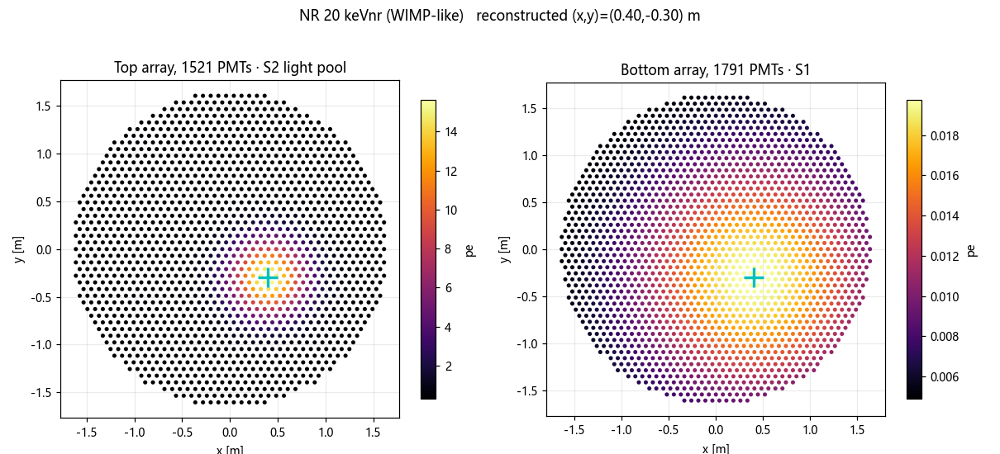
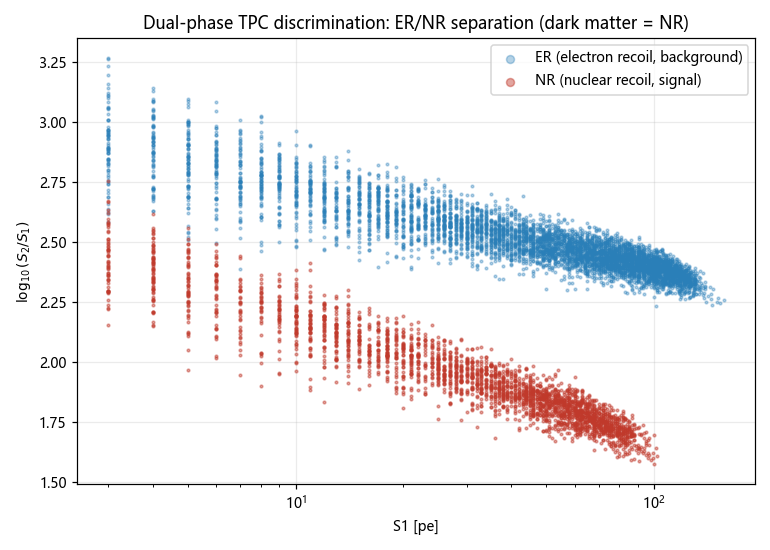
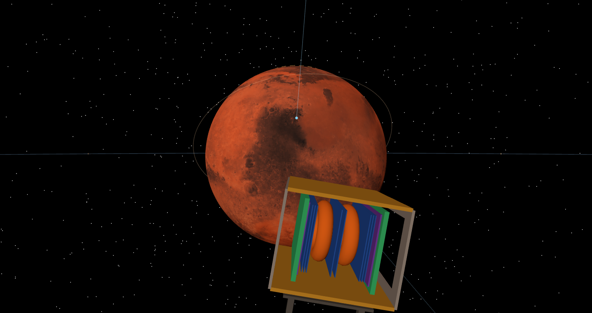
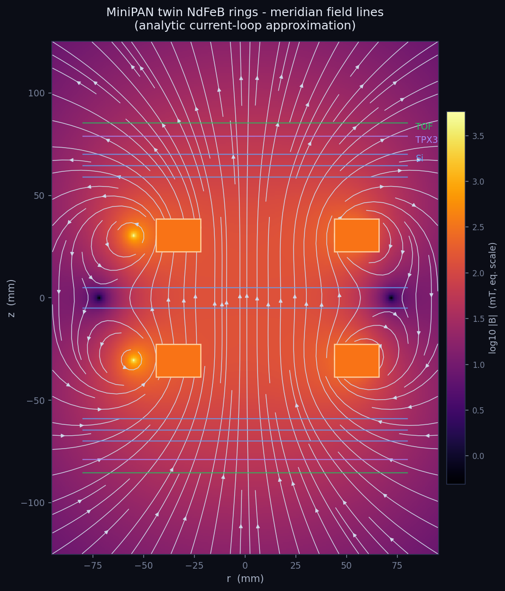
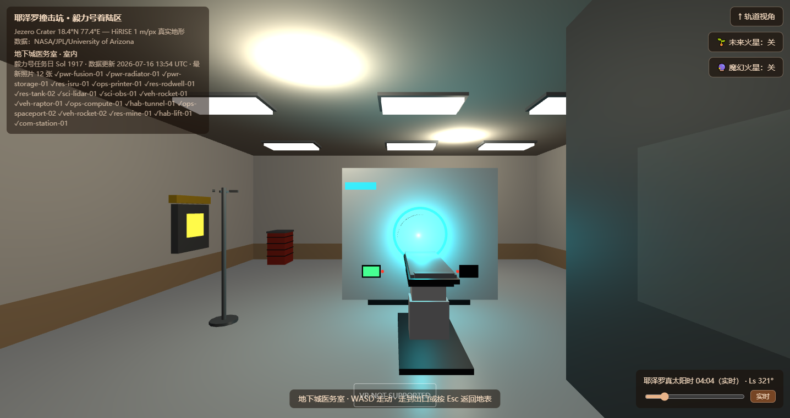
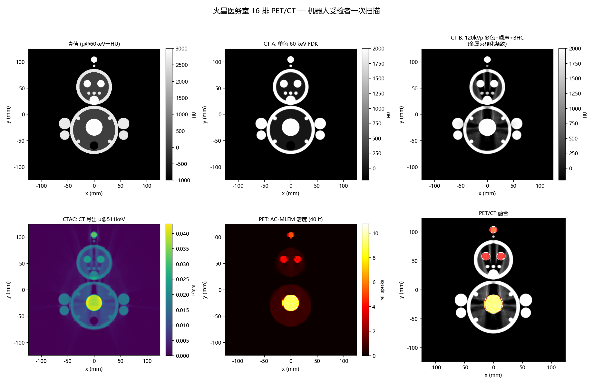

PandaX深地暗物质实验室 · −3000 m

20 keVnr WIMP-like 事例：S2 光池点亮顶阵，毫米级重建落点

S1/S2 分辨带 —— 核反冲与电子反冲在此分家
靶体100 t 液氙 · TPC Ø3.55 m · 水屏蔽罐 Ø14×15 m
📐 光读出顶 1521 + 底 1791 只 PMT，单事例 S1/S2 双信号定位 + 定能
📐 蒙卡Geant4 系模块化框架 49 个源码模块（几何/物理/探测器 4 大件）
MiniPAN静止轨道中继星载荷 · +17,032 km

剖视：TOF（绿）→ TPX3（紫）→ 硅微条（蓝）→ 双 NdFeB 环磁体（橙）

双环磁体子午面场线（电流环解析近似）—— 磁谱仪的弯折区
构型200×200×250 mm 磁谱望远镜 · 磁铁×2 + TOF×2 + TPX3×2 + 硅微条×8
📐 重建Geant4 PANSim：1 GeV e⁻/p 弯折径迹 → 刚度/能量分辨已跑通
挂载已随 com-relay-01 主星入轨（天顶甲板，几何按 PANSim 移植，只建模不改动力学）
TOF-PET地下城医务室 · −12 m

医务室 PET-CT 整机：Ø700 孔径 · 37 模块 PET 环（引擎内实拍）

机器人受检者一次扫描：AC-MLEM 活度重建 + PET/CT 融合（GATE 蒙卡）
整机PET+CT 双模 · Ø700 mm 孔径 · 两级升降病床（真机参数复刻）
📐 TOF 增益飞行时间信息入重建：本底波动 11.5%→5.0%，CNR 最高提升 ~1.8×
📐 前端自研 TOF ASIC 读出链（TIA + CSA + ToT，SPICE 全链仿真）